토목산업기사 (2018-04-28 기출문제)
1과목: 응용역학
1. 그림과 같은 라멘에서 C점의 휨모멘트는?
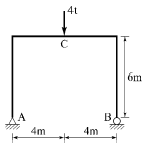
- 4t·m
- 8t·m
- 12t·mg
- 16t·m
(정답률: 85%)

2. 그림과 같은 3활절 아치의 지점 A에서의 지점반력 VA 와 HA 값이 옳은 것은?
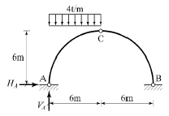
- VA= 18t(↑), HA= 18t(→)
- VA= 18t(↑), HA= 6t(→)
- VA= 18t(↓), HA= 18t(←)
- VA= 18t(↑), HA= 6t(←)
(정답률: 87%)
3. 다음 그림에서 지점 A의 반력의 영(零)이 되기 위해 C점에 작용시킬 집중하중의 크기(P는)?
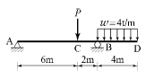
- 12t
- 16t
- 20t
- 24t
(정답률: 82%)
4. 재료의 역학적성질 중 탄성계수를 E, 전단탄성계수를 G, 포아송수를 m이라할 때 각 성질의 상호관계식으로 옳은 것은?
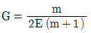
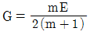
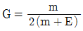
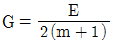
(정답률: 79%)
5. 장주에서 오일러의 좌굴하중(P)을 구하는 공식은 아래의 표와 같다. 여기서 n값이 1이 되는 기둥의 지지조건은?
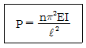
- 양단 힌지
- 1단 고정, 1단 자유
- 1단 고정, 1단 힌지
- 양단 고정
(정답률: 76%)
6. 다음 구조물 중 부정정 차수가 가장 높은 것은?
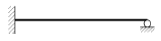
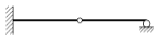
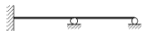
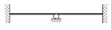
(정답률: 82%)
7. 그림과 같은 캔틸레버보에서 B점의 처짐은? (단, EI는 일정하다.)
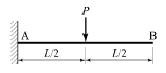
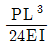
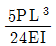
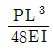
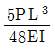
(정답률: 62%)
8. 다음 중 변형에너지에 속하지 않는 것은?
- 외력의 일
- 축방향 내력의 일
- 휨모멘트에 의한 내력의 일
- 전단력에 의한 내력의 일
(정답률: 84%)
9. 다음 중 부정정 트러스를 해석하는데 적합한 방법은?
- 모멘트 분배법
- 처짐각법
- 가상일의 원리
- 3연 모멘트법
(정답률: 65%)
10. 다음 그림과 같은 모멘트 하중을 받는 단순보에서 A점의 반력(RA)은?(오류 신고가 접수된 문제입니다. 반드시 정답과 해설을 확인하시기 바랍니다.)
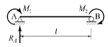
- M1/ℓ
- M2/ℓ
- (M1+M2)/ℓ
- (M1-M2)/ℓ
(정답률: 63%)
11. 사각형 단면에서의 최대 전단응력은 평균 전단응력의 몇 배인가?
- 1배
- 1.5배
- 2.0배
- 2.5배
(정답률: 82%)
12. 다음 그림에서 부재 AC와 BC의 단면력은?
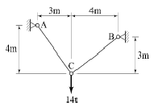
- FAC=0.6t, FBC=8.0t
- FAC=0.8t, FBC=6.0t
- FAC=8.4t, FBC=11.2t
- FAC=11.2t, FBC=8.4t
(정답률: 60%)
13. 등분포하중 2t/m를 받는 지간 10m의 단순보에서 발생하는 최대 휨모멘트는? (단, 등분포하중은 지간 전체에 작용한다.)
- 15t·m
- 20t·m
- 25t·m
- 30t·m
(정답률: 61%)
14. 다음 중 힘의 3요소가 아닌 것은?
- 크기
- 방향
- 작용점
- 모멘트
(정답률: 83%)
15. 폭이 20cm이고, 높이가 30cm인 직사각형 단면보가 최대 휨모멘트(M) 2t·m를 받을 때 최대 휨응력은?
- 33.33kg/cm2
- 44.44kg/cm2
- 66.67kg/cm2
- 77.78kg/cm2
(정답률: 78%)
16. 등분포하중(ω)이 재하된 단순보의 최대처짐에 대한 설명 중 틀린 것은?
- 하중(ω)에 비례한다.
- 탄성계수(E)에 반비례한다.
- 지간(ℓ)의 제곱에 반비례한다.
- 단면 2차 모멘트(I)에 반비례한다.
(정답률: 80%)
17. 다음 그림에서 사선부분의 도심축 x에 대한 단면 2차 모멘트는?
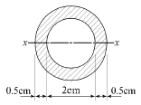
- 3.19cm4
- 2.19cm4
- 1.19cm4
- 0.19cm4
(정답률: 76%)
18. 지름 1cm, 길이 1m, 탄성계수 10000kg/cm2의 철선에 무게 10kg의 물건을 매달았을 때 철선의 늘어나는 양은?
- 1.27mm
- 1.60mm
- 2.24mm
- 2.63mm
(정답률: 70%)
19. 단면의 성질에 대한 다음 설명 중 틀린 것은?
- 단면2차 모멘트의 값은 항상 “0”보다 크다.
- 단면2차 극모멘트의 값은 항상 극을 원점으로 하는 두 직교좌표축에 대한 단면2차 모멘트의 합과 같다.
- 단면1차 모멘트의 값은 항상 “0”보다 크다.
- 단면의 주축에 관한 단면 상승 모멘트의 값은 항상 “0”이다.
(정답률: 75%)
20. 다음과 같은 단주에서 편심거리 e에 P=30t이 작용할 때 단면에 인장력이 생기지 않기 위한 e의 한계는?
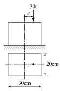
- 3.3cm
- 5cm
- 6.7cm
- 10cm
(정답률: 70%)
2과목: 측량학
21. 곡선부를 주행하는 차의 뒷바퀴가 앞바퀴보다 항상 안쪽을 지나게 되므로 직선부보다 도로폭을 크게 해주는 것은?
- 편경사
- 길 어깨
- 확폭
- 측구
(정답률: 80%)
22. 하천의 수위관측소의 설치장소로 적당하지 않은 것은?
- 하상과 하안이 안전한 곳
- 수위가 구조물의 영향을 받지 않는 곳
- 홍수 시에도 수위를 쉽게 알아볼 수 있는 곳
- 수위의 변화가 크게 발생하여 그 변화가 뚜렷한 곳
(정답률: 78%)
23. 원곡선에 의한 종곡선 설치에서 상향기울기 4.5/1000와 하향기울기 35/1000의 종단선형에 반지름 3000m의 원곡선을 설치할 때 종단곡선의 길이 (L)는?
- 240.5m
- 150.2m
- 118.5m
- 60.2m
(정답률: 58%)
24. 캔트(C)인 원곡선에서 곡선반지름을 3배로 하면 변화된 캔트(C′)는?
- C/9
- C/3
- 3C
- 9C
(정답률: 70%)
25. 수준측량에서 사용되는 기고식 야장 기입 방법에 대한 설명으로 틀린 것은?
- 종·횡단 수준측량과 같이 후시보다 전시가 많을 때 편리하다.
- 승강식보다 기입사항이 많고 상세하여 중간점이 많을 때에는 시간이 많이 걸린다.
- 중간시가 많은 경우 편리한 방법이나 그 점에 대한 검산을 할 수가 없다.
- 지반고에 후시를 더하여 기계고를 얻고, 다른 점의 전시를 빼면 그 지점에 지반고를 얻는다.
(정답률: 62%)
26. 교각이 60°, 교점까지의 추가거리가 356.21m, 곡선 시점까지의 추가거리가 183.00m이면 단곡선의 곡선 반지름은?
- 616.97m
- 300.01m
- 2⑤.66m
- 100.00m
(정답률: 67%)
27. 측지측량에 용어에 대한 설명 중 옳지 않은 것은?
- 지오이드란 평균해수면을 육지부분까지 연장한 가상 곡면으로 요철이 없는 미끈한 타원체이다.
- 연직선편차는 연직선과 기준타원체 법선 사이의 각을 의미한다.
- 구과량은 구면삼각형의 면적에 비례한다.
- 기준타원체는 수평위치를 나타내는 기준면이다.
(정답률: 47%)
28. 삼각망 중 정확도가 가장 높은 삼각망은?
- 단열삼각망
- 단삼각망
- 유심삼각망
- 사변형삼각망
(정답률: 78%)
29. P점의 좌표가 XP=-1000m, YP= 2000m이고, PQ의 거리가 1500m, PQ의 방위각이 120°일 때 Q점의 좌표는?
- XQ=-1750m, YQ=+3299m
- XQ=+1750m, YQ=+3299m
- XQ=+1750m, YQ=-3299m
- XQ=-1750m, YQ=-3299m
(정답률: 44%)
30. 그림과 같은 지역을 표고 190m 높이로 성토하여 정지하려 한다. 양단면평균법에 의한 토공량은? (단, 160m 이하의 부피는 생략한다.)
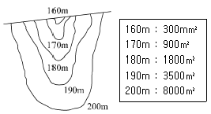
- 103500m3
- 74000m3
- 46000m3
- 29000m3
(정답률: 44%)
31. 삼각점 A에 기계를 세웠을 때, 삼각점 B가 보이지 않아 P를 관측하여 T′=65°42′39″의 결과를 얻었다면 T=∠DAB는? (단, S=2km, e=40cm,ø=256°40′)
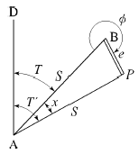
- 65°39′58″
- 65°40′20″
- 65°41′59″
- 65°42′20″
(정답률: 57%)
32. 초점거리 153mm의 카메라로 고도 800m에서 촬영한 수직사진 1장에 찍히는 실제면적은? (단, 사진의 크기는 23cm×23cm이다.)
- 1.446km2
- 1.840km2
- 5.228km2
- 5.290km2
(정답률: 36%)
33. 1km2의 면적이 도면상에서 4cm2일 때의 축척은?
- 1:2500
- 1:5000
- 1:25000
- 1:50000
(정답률: 54%)
34. 항공사진의 중복도에 대한 설명으로 옳지 않은 것은?
- 종중복도는 동일 촬영경로에서 30% 이하로 동일할 경우 허용될 수 있다.
- 중복도는 입체시를 위하여 촬영 진행방향으로 60%를 표준으로 한다.
- 촬영 경로사이의 인접코스 간 중복도는 30%를 표준으로 한다.
- 필요에 따라 촬영 진행 방향으로 80%, 인접 코스 중복을 50%까지 중복하여 촬영할 수 있다.
(정답률: 29%)
35. 1:25000지형도에서 표고 621.5m와 417.5m 사이에 주곡선 간격의 등고선 수는?
- 5
- 11
- 15
- 21
(정답률: 50%)
36. 거리관측의 정밀도와 각관측의 정밀도가 같다고 할때 거리관측의 허용오차를 1/3000로 하면 각관측의 허용오차는?
- 4″
- 41″
- 1′9″
- 1′23″
(정답률: 42%)
37. A점은 30m 등고선 상에 있고, B점은 40m 등고선 상에 있다. AB의 경사가 25%일 때 AB 경사면의 수평거리는?
- 10m
- 20m
- 30m
- 40m
(정답률: 39%)
38. 교호 수준 측량을 하는 주된 이유로 옳은 것은?
- 작업속도가 빠르다.
- 관측인원을 최소화 할 수 있다.
- 전시, 후시의 거리차를 크게 둘 수 있다.
- 굴절오차 및 시준축 오차를 제거할 수 있다.
(정답률: 77%)
39. 하천의 연직선 내의 평균유속을 구하기 위한 2점법의 관측 위치로 옳은 것은?
- 수면으로부터 수심의 10%, 90% 지점
- 수면으로부터 수심의 20%, 80% 지점
- 수면으로부터 수심의 30%, 70% 지점
- 수면으로부터 수심의 40%, 60% 지점
(정답률: 77%)
40. 두 지점의 거리(
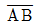
)를 관측하는데, 갑은 4회 관측하고, 을은 5회 관측한 후 경중률을 고려하여 최확값을 계산할 때, 갑과 을의 경중률(갑 : 을)은?- 4 : 5
- 5 : 4
- 16 : 25
- 25 : 16
(정답률: 66%)
3과목: 수리학
41. 그림과 같이 안지름 10cm의 연직관 속에 1.2m만큼 모래가 들어있다. 모래면 위의 수위를 일정하게 하여 유량을 측정하였더니 유량이 4L/hr이었다면 모래의 투수계수 k는?
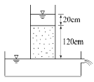
- 0.012cm/s
- 0.024cm/s
- 0.033cm/s
- 0.044cm/s
(정답률: 50%)
42. 원관 내를 흐르고 있는 층류에 대한 설명으로 옳지 않은 것은?
- 유량은 관의 반지름의 4제곱에 비례한다.
- 유량은 단위길이당 압력강하량에 반비례한다.
- 유속은 점성계수에 반비례한다.
- 평균유속은 최대유속의 1/2이다.
(정답률: 39%)
43. 유량 147.6L/s를 송수하기 위하여 내경 0.4m의 관을 700m 설치하였을 때의 관로 경사는? (단, 조도계수 n=0.012m, Manning 공식 적용)
- 2/700
- 2/500
- 3/700
- 3/500
(정답률: 43%)
44. 수심 2m, 폭 4m인 직사각형 단면 개수로에서 Manning의 평균유속 공식에 의한 유량은? (단, 수로의 조도계수 n=0.025, 수로경사 I=1/100)
- 32m3/s
- 64m3/s
- 128m3/s
- 160m3/s
(정답률: 34%)
45. 수면의 높이가 일정한 저수지의 일부에 길이(B) 30m의 월류 위어를 만들어 40m3/s의 물을 취수하기 위한 위어 마루부로부터의 상류측 수심(H)은? (단, C=1.0이고, 접근 유속은 무시한다.)
- 0.70m
- 0.75m
- 0.80m
- 0.85m
(정답률: 47%)
46. 베르누이의 정리에 관한 설명으로 옳지 않은 것은?
- 베르누이의 정리는 (운동에너지) + (위치에너지)가 일정함을 표시한다.
- 베르누이의 정리는 에너지(energy) 불변의 법칙을 유수의 운동에 응용한 것이다.
- 베르누이의 정리는 (속도수두) + (위치수두) + (압력수두)가 일정함을 표시한다.
- 베르누이의 정리는 이상유체에 대하여 유도되었다.
(정답률: 54%)
47. 단면이 일정한 긴 관에서 마찰손실만이 발생하는 경우 에너지선과 동수경사선은?
- 일치한다.
- 교차한다.
- 서로 나란하다.
- 관의 두께에 따라 다르다.
(정답률: 70%)
48. 단면적 2.5cm2, 길이 2m인 원형강철봉의 무게가 대기 중에서 27.5N 이었다면 단위무게가 10kN/m3 인 수중에서의 무게는?
- 22.5N
- 25.5N
- 27.5N
- 28.5N
(정답률: 47%)
49. 모세관현상에서 액체기둥의 상승 또는 하강 높이의 크기를 결정하는 것은?
- 응집력
- 부착력
- 마찰력
- 표면장력
(정답률: 65%)
50. 1차원 정상류 흐름에서 질량 m인 유체가 유속이 v1인 단면 1에서 유속이 v2인 단면 2로 흘러가는데 짧은 시간 Δt가 소요된다면 이 경우의 운동량 방정식으로 옳은 것은?
- F·m = Δt(v1-v2)
- F·m = (v1-v2)/Δt
- F·Δt = m(v2-v1)
- F·Δt = (v2-v1)/m
(정답률: 59%)
51. 저수지로부터 30m 위쪽에 위치한 수조탱크에 0.35m3/s의 물을 양수하고자 할 때 펌프에 공급되어야하는 동력은? (단, 손실수두는 무시하고 펌프의 효율은 75%이다.)
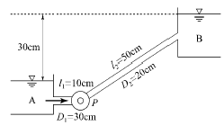
- 77.2kW
- 102.9kW
- 120.1kW
- 137.2kW
(정답률: 35%)
52. 폭 1.5m인 직사각형 수로에 유량 1.8m3/s의 물이 항상 수심 1m로 흐르는 경우 이 흐름의 상태는? (단, 에너지보정계수 a=1.1)
- 한계류
- 부정류
- 사류
- 상류
(정답률: 60%)
53. 개수로의 지배단면(control section)에 대한 설명으로 옳은 것은?
- 홍수 시 하천흐름이 부정류인 경우에 발생한다.
- 급경사의 흐름에서 배수곡선이 나타나면 발생한다.
- 상류흐름에서 사류흐름으로 변화할 때 발생한다.
- 사류흐름에서 상류흐름으로 변화하면서 도수가 발생할 때 나타난다.
(정답률: 62%)
54. 수로폭이 B이고 수심이 H인 직사각형 수로에서 수리학상 유리한 단면은?
- B = H2
- B = 0.3H2
- B = 0.5H
- B = 2H
(정답률: 68%)
55. 부력과 부체 안정에 관한 설명 중에서 옳지 않은 것은?
- 부체의 무게중심과 경심의 거리를 경심고라 한다.
- 부체가 수면에 의하여 절단되는 가상면을 부양면이라 한다.
- 부력의 작용선과 물체 중심축의 교점을 부심이라 한다.
- 수면에서 부체의 최심부까지 거리를 흘수라 한다.
(정답률: 35%)
56. 오리피스에서 에너지 손실을 보정한 실제유속을 구하는 방법은?
- 이론유속에 유량계수를 곱한다.
- 이론유속에 유속계수를 곱한다.
- 이론유속에 동점성계수를 곱한다.
- 이론유속에 항력계수를 곱한다.
(정답률: 49%)
57. 하나의 유관 내의 흐름이 정류일 때, 미소거리 dℓ만큼 떨어진 1, 2 단면에서 단면적 및 평균유속을 각각 A1, A2 및 V1, V2라 하면, 이상유체에 대한 연속방정식으로 옳은 것은?
- A1V1=A2V2
- d(A1V1-A2V2)/dℓ = 일정(一定)
- d(A1V1+A2V2)/dℓ = 일정(一定)
- A1V2=A2V1
(정답률: 47%)
58. 다음 물리량에 대한 차원을 설명한 것 중 옳지 않은 것은?
- 압력 : [ML-1lT-2]
- 밀도 : [ML-2]
- 점성계수 : [ML-1T-1]
- 표면장력 : [MT-2]
(정답률: 52%)
59. 지하수 흐름의 기본방정식으로 이용되는 법칙은?
- Chezy의 법칙
- Darcy의 법칙
- Manning의 법칙
- Reynolds의 법칙
(정답률: 68%)
60. 그림과 같이 직경 8cm인 분류가 35m/s의 속도로 vane에 부딪친 후 최초의 흐름 방향에서 150° 수평 방향 변화를 하였다. vane이 최초의 흐름 방향으로 10m/s의 속도로 이동하고 있을 때, vane에 작용하는 힘의 크기는? (단, 무게 1kg = 9.8N)
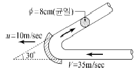
- 3.6kN
- 5.4kN
- 6.1kN
- 8.5kN
(정답률: 40%)
4과목: 철근콘크리트 및 강구조
61. 보통콘크리트 부재의 해당 지속 하중에 대한 탄성 처짐이 30mm이었다면 크리프 및 건조수축에 따른 추가적인 장기처짐을 고려한 최종 총 처짐량은 얼마인가? (단, 하중재하기간은 10년이고, 압축철근비 p′는 0.0⑤이다.)
- 78mm
- 68mm
- 58mm
- 48mm
(정답률: 52%)
62. 다음 그림은 필렛(Fillet) 용접한 것이다. 목두께 a를 표시한 것으로 옳은 것은?
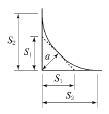
- a = S2×0.707
- a = S1×0.707
- a = S2×0.606
- a = S1×0.606
(정답률: 64%)
63. 강도설계법에서 단철근 직사각형 보가 fck=24MPa, fy =400MPa일 때 균형철근비는?(오류 신고가 접수된 문제입니다. 반드시 정답과 해설을 확인하시기 바랍니다.)
- 0.01658
- 0.01842
- 0.02124
- 0.02601
(정답률: 56%)
64. 복철근 단면의 보에 대한 설명으로 틀린 것은?
- 보의 단면이 제한될 때, 특히 유효깊이에 제한이 있을 때 사용한다.
- 복철근보의 압축철근은 보의 강성을 증가시키며, 급속파괴의 가능성을 감소시킨다.
- 복철근보의 압축철근은 콘크리트의 크리프와 건조수축에 의한 보의 처짐을 감소시킨다.
- 정(+), 부(-)의 휨모멘트를 겸해서 받는 경우에는 복철근보의 효과가 없다.
(정답률: 47%)
65. 강도설계법의 가정으로 틀린 것은?
- 철근과 콘크리트의 변형률은 중립축으로부터의 거리에 비례한다.
- 압축측 연단에서 콘크리트의 극한 변형률은 0.003으로 가정한다.
- 휨응력 계산에서 콘크리트의 인장강도는 무시한다.
- 극한강도 상태에서 콘크리트의 응력은 그 변형률에 비례한다.
(정답률: 48%)
66. 원형 띠철근으로 둘러싸인 압축부재의 축방향 주철근의 최소 개수는?
- 3개
- 4개
- 5개
- 6개
(정답률: 53%)
67. 철근콘크리트 보에 발생하는 장기처짐에 대한 설명으로 틀린 것은?
- 장기처짐은 지속하중에 의한 건조수축이나 크리프에 의해 일어난다.
- 장기처짐은 시간의 경과와 더불어 진행되는 처짐이다.
- 장기처짐은 그 요인이 복잡하므로 실험에 의해 추정하게 된다.
- 장기처짐은 부재가 탄성거동을 한다고 가정하고 역학적으로 계산하여 구한다.
(정답률: 51%)
68. 강도 설계법에서 1방향 슬래브(slab)의 구조상세에 관한 사항 중 틀린 것은?
- 1방향 슬래브의 두께는 최소 100mm 이상이어야 한다.
- 슬래브의 정모멘트 철근 및 부모멘트 철근의 중심간격은 위험단면에서는 슬래브 두께의 2배 이하이어야 하고, 또한 300mm 이하로 하여야 한다.
- 슬래브의 정모멘트 철근 및 부모멘트 철근의 중심간격은 위험단면 이외의 단면에서는 슬래브 두께의 4배 이하이어야 하고, 또한 600mm 이하로 하여야한다.
- 1방향 슬래브에서는 정모멘트 철근 및 부모멘트 철근에 직각방향으로 수축·온도철근을 배치하여야 한다.
(정답률: 51%)
69. 그림과 같은 맞대기용접이음에서 이음의 응력을 구한 값은?
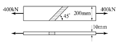
- 141MPa
- 183MPa
- 200MPa
- 283MPa
(정답률: 47%)
70. 고장력 볼트를 사용한 이음의 종류가 아닌 것은?
- 압축이음
- 마찰이음
- 지압이음
- 인장이음
(정답률: 45%)
71. 프리스트레스의 손실 원인 중 프리스트레스를 도입할 때 즉시 손실의 원인이 되는 것은?
- 콘크리트의 크리프
- PS강재와 쉬스 사이의 마찰
- PS강재의 릴랙세이션
- 콘크리트의 건조수축
(정답률: 56%)
72. 인장을 받는 이형철근의 기본정찰길이(ldb)를 계산하기 위해 필요한 요소가 아닌 것은?
- 철근의 공칭지름
- 철근의 설계기준 항복강도
- 전단철근의 간격
- 콘크리트의 설계기준 압축강도
(정답률: 61%)
73. 프리스트레스트 콘크리트의 강도개념을 설명한 것으로 옳은 것은?
- PSC보를 RC보처럼 생각하여 콘크리트는 압축력을 받고 긴장재는 인장력을 받게하여 두 힘의 우력 모멘트로 외력에 의한 휨모멘트에 저항시킨다는 개념
- 프리스트레스가 도입되면 콘크리트 부재에 대한 해석이 탄성이론으로 가능하다는 개념
- 프리스트레싱에 의한 작용과 부재에 작용하는 하중을 평형이 되도록 하자는 개념
- 선형탄성이론에 의한 개념이며 콘크리트와 긴장재의 계산된 응력이 허용응력 이하로 되도록 설계하는 개념
(정답률: 52%)
74. 강도설계법에서 등가직사각형 응력블록의 깊이(a)는 아래 표와 같은 식으로 구할 수 있다. 여기서 fck 가38MPa인 경우 β1의 값은?
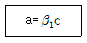
- 0.74
- 0.76
- 0.78
- 0.80
(정답률: 56%)
75. 파셜 프리스트레스 보(partially prestressed beam)란 어떤 보인가?
- 사용하중 하에서 인장응력이 일어나지 않도록 설계된 보
- 사용하중 하에서 얼마간의 인장응력이 일어나도록 설계된 보
- 계수하중 하에서 인장응력이 일어나지 않도록 설계된 보
- 부분적으로 철근 보강된 보
(정답률: 53%)
76. 아래 그림과 같은 단철근 직사각형 단면보의 설계휨 각도 øMn을 구하면? (단, As= 2000mm2, fck=24MPa, fy= 400MPa, 이 단면은 인장지배단면이다.)
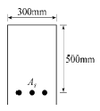
- 243.8kN·m
- 274.1kN·m
- 295.6kN·m
- 324.7kN·m
(정답률: 49%)
77. 구조물의 부재, 부재간의 연결부 및 각 부재단면의 휨모멘트, 축력, 전단력, 비틀림모멘트에 대한 설계강도는 공칭강도에 강도감소계수 ø를 곱한 값으로 한다. 무근콘크리트의 휨모멘트, 압축력, 전단력, 지압력에 대한 강도감소계수는?
- 0.55
- 0.65
- 0.7
- 0.75
(정답률: 56%)
78. 부벽식옹벽에서 뒷부벽의 설계에 대한 설명으로 옳은 것은?
- 직사각형보로 설계한다.
- T형보로 설계하여야 한다.
- 저판에 지지된 캔틸레버로 설계할 수 있다.
- 3변 지지된 2방향 슬래브로 설계할 수 있다.
(정답률: 69%)
79. 철근 콘크리트 보에 전단력과 휨만 작용할 때 콘크리트가 받을 수 있는 설계 전단강도(øVc)는 약 얼마인가? (단, bω= 350mm, d= 600mm, fck = 28MPa, fy= 400MPa)
- 87.6kN
- 129.6kN
- 138.9kN
- 148.2kN
(정답률: 51%)
80. 전단철근으로 사용될 수 있는 것이 아닌 것은?
- 스터럽과 굽힘철근의 조합
- 부재축에 직각인 스터럽
- 부재축에 직각으로 배치된 용접철망
- 주인장 철근에 15°의 각도로 구부린 굽힘철근
(정답률: 57%)
5과목: 토질 및 기초
81. 말뚝재하실험 시 연약점토지반인 경우는 pile의 타입 후 20여 일이 지난 다음 말뚝재하실험을 한다. 그 이유로 가장 타당한 것은?
- 주면 마찰력이 너무 크게 작용하기 때문에
- 부마찰력이 생겼기 때문에
- 타입시 주변이 교란되었기 때문에
- 주위가 압축되었기 때문에
(정답률: 61%)
82. 다음의 흙 중 암석이 풍화되어 원래의 위치에서 토층이 형성된 흙은?
- 충적토
- 이탄
- 퇴적토
- 잔적토
(정답률: 54%)
83. 어느 흙의 액성한계는 35%, 소성한계가 22%일 때 소성지수는 얼마인가?
- 12
- 13
- 15
- 17
(정답률: 44%)
84. 다음 중 사면 안정 해석법과 관계가 없는 것은?
- 비숍(Bishop)의 방법
- 마찰원법
- 펠레니우스(Fellenius)의 방법
- 뷰지네스크(Boussinesq)의 이론
(정답률: 48%)
85. 노상토의 지지력을 나타내는 CBR값의 단위는?
- kg/cm2
- kg/cm
- kg/cm3
- %
(정답률: 51%)
86. 압밀실험에서 시간-침하곡선으로부터 직접 구할 수 있는 사항은?
- 선행압밀압력
- 점성보정계수
- 압밀계수
- 압축지수
(정답률: 56%)
87. 그림과 같은 지반에서 포화토 A-A면에서의 유효응력은?
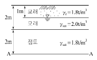
- 2.4t/m2
- 4.4t/m2
- 5.6t/m2
- 7.2t/m2
(정답률: 50%)
88. 다음 중 사운딩(sounding)이 아닌 것은?
- 표준관입시험
- 일축압축시험
- 원추관입시험
- 베인시험
(정답률: 45%)
89. 다음 중 얕은기초에 속하지 않는 것은?
- 피어기초
- 전면기초
- 독립확대기초
- 복합확대기초
(정답률: 56%)
90. 어느 흙에 대하여 직접 전단시험을 하여 수직응력이 3.0kg/cm2 일 때 2.0kg/cm2의 전단강도를 얻었다. 이 흙의 점착력이 1.0kg/cm2이면 내부마찰각은 약 얼마인가?
- 15.2°
- 18.4°
- 21.3°
- 24.6°
(정답률: 46%)
91. 그림과 같은 모래 지반에서 흙의 단위중량이 1.8t/m3이다. 정지토압 계수가 0.5이면 깊이 5m 지점에서의 수평 응력은 얼마인가?
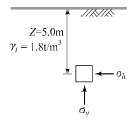
- 4.5t/m2
- 8.0t/m2
- 13.5tm2
- 15.0t/m2
(정답률: 44%)
92. 다음 그림과 같은 다층지반에서 연직방향의 등가투수계수는?
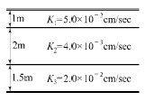
- 5.8×10-3cm/sec
- 6.4×10-3cm/sec
- 7.6×10-3cm/sec
- 1.4×10-2cm/sec
(정답률: 38%)
93. 다음 중 느슨한 모래의 전단변위와 시료의 부피 변화 관계곡선으로 옳은 것은?
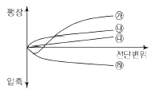
- ㉮
- ㉯
- ㉰
- ㉱
(정답률: 49%)
94. 비중이 2.60이고 간극비가 0.60인 모래지반의 한계동수 경사는?
- 1.0
- 2.25
- 4.0
- 9.0
(정답률: 51%)
95. 점토질 지반에서 강성기초의 접지압 분포에 관한 다음 설명 중 옳은 것은?
- 기초의 중앙 부분에서 최대의 응력이 발생한다.
- 기초의 모서리 부분에서 최대의 응력이 발생한다.
- 기초부분의 응력은 어느 부분이나 동일하다.
- 기초 밑면에서의 응력은 토질에 관계없이 일정하다.
(정답률: 53%)
96. 포화점토의 일축압축 시험 결과 자연상태 점토의 일축압축 강도와 흐트러진 상태의 일축압축 강도가 각각 1.8kg/cm2, 0.4kg/cm2였다. 이 점토의 예민비는?
- 0.72
- 0.22
- 4.5
- 6.4
(정답률: 44%)
97. 평판재하시험이 끝나는 조건에 대한 설명으로 틀린 것은?
- 침하량이 15mm에 달할 때
- 하중 강도가 현장에서 예상되는 최대 접지압력을 초과할 때
- 하중 강도가 그 지반의 항복점을 넘을 때
- 흙의 함수비가 소성한계에 달할 때
(정답률: 44%)
98. 어떤 모래의 입경가적곡선에서 유효입경 D10 =0.01mm이었다. Hazen 공식에 의한 투수계수는? (단, 상수(C)는 100을 적용한다.)
- 1×10-4cm/sec
- 2×10-6cm/sec
- 5×10-4cm/sec
- 5×10-6cm/sec
(정답률: 43%)
99. 다음 다음 연약지반 처리공법 중 일시적인 공법은?
- 웰 포인트 공법
- 치환 공법
- 콤포져 공법
- 샌드 드레인 공법
(정답률: 58%)
100. A방법에 의해 흙의 다짐시험을 수행하였을 때 다짐에너지(Ec)는?
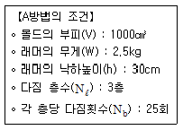
- 4.625kg·cm/cm3
- 5.625kg·cm/cm3
- 6.625kg·cm/cm3
- 7.625kg·cm/cm3
(정답률: 49%)
6과목: 상하수도공학
101. 하수의 염소요구량이 9.2mg/L일 때 0.5mg/L의 잔류염소량을 유지하기 위하여 2500m3/day의 하수에 1일 주입하여야 할 염소량은?
- 23.0kg/day
- 1.25kg/day
- 21.75kg/day
- 24.25kg/day
(정답률: 24%)
102. 하수도시설 중 펌프장시설의 침사지에 대한 설명중 틀린 것은?
- 일반적으로 직경이 큰 무기질, 비부패성 무기물 및 입자가 큰 부유물을 제거하기 위한 것이다.
- 침사지의 지수는 단일 지수를 원칙으로 한다.
- 펌프 및 처리시설의 파손을 방지하도록 펌프 및 처리시설의 앞에 설치한다.
- 침사지방식은 중력식, 포기식, 기계식 등이 있다.
(정답률: 36%)
103. 수원의 종류를 구분할 때 지표수에 해당하지 않는 것은?
- 용천수
- 하천수
- 호소수
- 저수지수
(정답률: 55%)
104. 명반(Alum)을 사용하여 상수를 침전 처리하는 경우 약품주입 후 응집조에서 완속교반을 하는 이유는?
- 명반을 용해시키기 위하여
- 플록(floc)을 공기와 접촉시키기 위하여
- 플록(floc)이 잘 부서지도록 하기 위하여
- 플록(floc)의 크기를 증가시키기 위하여
(정답률: 45%)
1⑤. 하수처리장의 위치 선정과 관련하여 고려할 사항으로 거리가 먼 것은?
- 가능한 하수가 자연유하로 유입될 수 있는 곳
- 홍수 시 침수되지 않고 방류선이 확보되는 곳
- 현재 및 장래에 토지이용계획상 문제점이 없을 것
- 하수를 배출하는 지역에 가까이 있을 것
(정답률: 42%)
106. 염소살균의 특징에 대한 설명으로 옳지 않은 것은?
- 살균력이 뛰어나다.
- 설비 및 주입방법이 비교적 간단하다.
- THMs의 생성을 방지할 수 있다.
- 비용이 비교적 저렴하다.
(정답률: 51%)
107. 그림에서와 같은 하수관의 접합방식은?
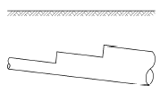
- 관정접합
- 관저접함
- 수면접합
- 중심접합
(정답률: 47%)
108. 암모니아성 질소(NH3-N)1mg/L를 질산성 질소(NO-3-N)로 산화하는 데 필요한 산소량은?
- 1.71mg/L
- 3.42mg/L
- 4.57mg/L
- 5.14mg/L
(정답률: 31%)
109. 용존산소(DO)에 대한 설명으로 옳지 않은 것은?
- 오염된 물은 용존산소량이 적다.
- BOD가 큰 물은 용존산소량이 많다.
- 용존산소량이 적은 물은 혐기성 분해가 일어나기 쉽다.
- 용존산소가 극히 적은 물은 어류의 생존에 적합하지 않다.
(정답률: 50%)
110. 합류식 하수도에 대한 설명으로 틀린 것은?
- 관로의 단면적이 커서 폐쇄될 가능성이 적다.
- 우천 시 오수가 월류할 수 있다.
- 관로 오접합 문제가 발생할 수 있다.
- 강우 시 수세효과가 있다.
(정답률: 42%)
111. 다음 중 하수의 살균에 사용되지 않는 것은?
- 염소
- 오존
- 적외선
- 자외선
(정답률: 50%)
112. 수질검사에서 대장균을 검사하는 이유는?
- 대장균이 병원체이기 때문이다.
- 물을 부패시키는 세균이기 때문이다.
- 수질오염을 가져오는 대표적인 세균이기 때문이다.
- 대장균을 이용하여 다른 병원체의 존재를 추정할 수 있기 때문이다.
(정답률: 55%)
113. 관로 유속의 급격한 변화로 인하여 관내압력이 급상승 또는 급강하 하는 현상은?
- 공동현상
- 수격현상
- 진공현상
- 부압현상
(정답률: 48%)
114. 갈수 시에도 일정 이상의 수심을 확보할 수 있으면 연간의 수위변화가 크더라도 하천이나 호소, 댐에서의 취수시설로서 알맞고 또한 유지관리도 비교적 용이한 취수방법은?
- 취수틀에 의한 방법
- 취수문에 의한 방법
- 취수탑에 의한 방법
- 취수관거에 의한 방법
(정답률: 54%)
115. 관로의 위치가 동수경사선보다 높게 되는 것을 피할 수 없는 경우가 발생할 때 부분적으로 동수경사선을 상승시키는 방법으로 옳은 것은?
- 부압이 생기는 장소의 전체 관경을 줄여준다.
- 부압이 생기는 장소의 전체 관경을 늘려준다.
- 부압이 생기는 장소의 상류측 관경을 크게 하고 하류측 관경을 작게 한다.
- 부압이 생기는 장소의 상류측 관경을 작게 하고 하류측 관경을 크게 한다.
(정답률: 37%)
116. 하수처리장 2차침전지에서 슬러지 부상이 일어날 경우 관계되는 작용은?
- 질산화반응
- 탈질반응
- 핀플록반응
- 프라즈마반응
(정답률: 38%)
117. 슬러지 반송비가 0.4, 반송슬러지의 농도가 1%일때 포기조 내의 MLSS 농도는?
- 1234mg/L
- 2857mg/L
- 3325mg/L
- 4023mg/L
(정답률: 35%)
118. 급수방식에 대한 설명으로 옳지 않은 것은?
- 급수방식에는 직결식, 저수조식 및 직결·저수조 병용식이 있다.
- 직결식에는 직결직압식과 직결가압식이 있다.
- 급수관으로부터 수돗물을 일단 저수조에 받아서 급수하는 방식을 저수조식이라 한다.
- 수도의 단수 시에도 물을 반드시 확보해야 하는 경우에는 직결식을 적용하는 것이 바람직하다.
(정답률: 50%)
119. 하수처리계획 및 재이용계획의 계획오수량을 정할때, 1인1일최대오수량의 20%이하로 하며, 지역실태에 따라 필요 시 하수관로 내구연수경과 또는 관로의 노후도 등을 고려하여 결정하는 것은?
- 지하수량
- 생활오수량
- 공장폐수량
- 재활용수량
(정답률: 33%)
120. 상수도시설의 설계유량에 대한 설명으로 틀린 것은?
- 계획배수량은 원칙적으로 해당 배수구역의 계획1일 최대배수량으로 한다.
- 계획취수량은 계획1일최대급수량을 기준으로 하며, 기타 필요한 작업용수를 포함한 손실수량 등을 고려한다.
- 계획정수량은 계획1일최대급수량을 기준으로 하고, 여기에 정수장내 사용되는 작업용수와 기타용수를 합산 고려하여 결정한다.
- 송수시설의 계획송수량은 원칙적으로 계획1일 최대급수량을 기준으로 한다.
(정답률: 41%)